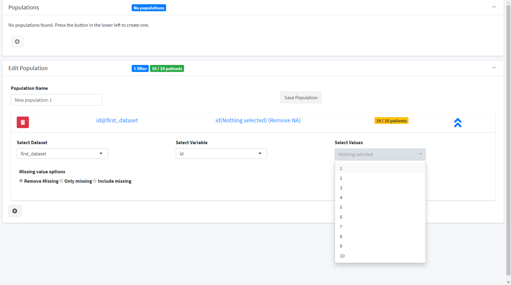

modules.RmdThis vignette shows how to use the shiny modules from {subpat} in your own applications.
The subpopulation module provides a tidymodules R6 class. Using these modules is just as easy as using a standard shiny module.
The input to the module is, datalist a reactive list of data sets (tibbles, data frames, etc). The options passed to the module are reactiveValues
sampleopts <- reactive(list(
# The id variable common to all data sets in `datalist`
idvar = "id",
# If only of the tables is a common table (subject level data), then specify here
subjectDs = NULL
))With these options the module will expect that each data set has a common variable ID.
# the constructor takes in an optional id parameter
# if we do not provide it then the module will generate a new id for us
subpopulationModule <- SubpopulationManager$new()
subpopulationModule
#> Module Namespace SubpopulationManager-1
#> Module Session global_session
#> - Class SubpopulationManager << TidyModule << R6
#> - Input [2]
#> (1) datalist => Empty
#> (2) options => Empty
#> - Output [1]
#> (1) populations => EmptyWe can see that from the output the input and outputs are shown as NULL. The options are OK because they default to the ADaM data set format. We can see this by accessing the options in the module
print(
# Need to wrap in isolate since options is a reactive function
isolate({
subpopulationModule$getInput("options")
})
)
#> [1] FALSE
#> attr(,"tidymodules")
#> [1] TRUE
#> attr(,"tidymodules_port_slot")
#> [1] TRUE
#> attr(,"tidymodules_port_type")
#> [1] "input"
#> attr(,"tidymodules_port_id")
#> [1] 2
#> attr(,"tidymodules_port_name")
#> [1] "options"
#> attr(,"tidymodules_port_description")
#> [1] "The options include `expanded` which is a booleaning indicating the expanded status of accordion"
#> attr(,"tidymodules_port_sample")
#> <ReactiveValues>
#> Values: idvar, subjectDs
#> Readonly: FALSE
#> attr(,"tidymodules_is_parent")
#> [1] FALSE
#> attr(,"tidymodules_inherit")
#> [1] FALSE
#> attr(,"tidymodules_module_ns")
#> [1] "SubpopulationManager-1"We can pass in the options using one of two options:
# Pipe syntax
# Options are port 2
# isolate({
# sampleopts %>2% subpopulationModule
# })
# using method updateOptionPort
isolate({
subpopulationModule$updateInputPort("options", sampleopts)
})
# Options are now updated
print(isolate({
subpopulationModule$execInput("options")
}))
#> $idvar
#> [1] "id"
#>
#> $subjectDs
#> NULLWe can include this in our shiny app using the following example. Since the subpopulation module uses bs4Dash features, we need to include it in a bs4DashPage.
library(tidymodules)
library(subpat)
library(bs4Dash)
# Optional id to pass into the module
subpopmod <- SubpopulationManager$new(id = "subpopmodule")
ui <- tagList(
# Need to include shinyjs for the functionality to work
shinyjs::useShinyjs(),
bs4DashPage(
sidebar = bs4DashSidebar(disable = TRUE),
body = bs4DashBody(
subpopmod$ui()
)
)
)
# Define server logic required to draw a histogram
server <- function(input, output) {
datalist <- reactive({
list(
first_dataset = data.frame(
id = as.factor(1:10),
gender = as.factor(round(runif(10))),
age = round(rnorm(10, mean = 40, sd = 15))
),
second_dataset = data.frame(
id = factor(c(4,5,6), levels = 1:10),
event = c("Heart attack", "Stroke", "Stroke")
)
)
})
opts <- reactiveValues(
# The id variable common to all data sets in `datalist`
idvar = "id",
# If only of the tables is a common table (subject level data), then specify here
subjectDs = NULL
)
subpopmod$callModule()
observe({
# Pass the data into the module
datalist %>1% subpopmod
# Add the options to the filter
opts %>2% subpopmod
})
}
# Run the application
shinyApp(ui = ui, server = server)Results in the follow interface: 